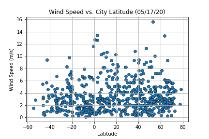
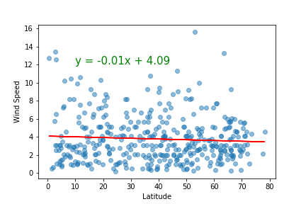
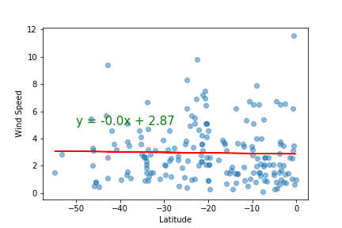

Wind Speed Analysis
This section aims to analyze and explain briefly the relationship between wind speed and latitude.
Wind Speed vs Latitude in the whole dataset

- The plot shows no direct relation between wind speed and latitude.
- The wind speed remains mostly from 0m/s to 6m/s, with a group of cities with wind speed reaching up to 10m/s, and very few cities go above that mark.
Wind Speed vs Latitude in the Northern Hemisphere

- The linear regression shows a negative-sloped line, but the slope is very small; it can be interpeted as zero.
Wind Speed vs Latitude in the Southern Hemisphere

- The linear regression shows a negative-sloped line, but the slope is zero at least to the first two decimals, this means it can be interpreted as a horizontal line.